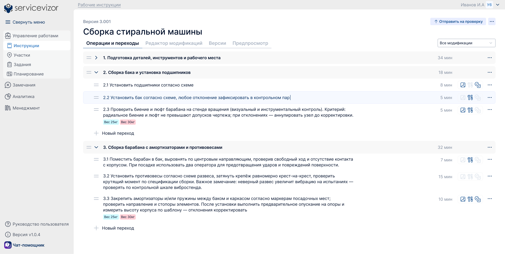
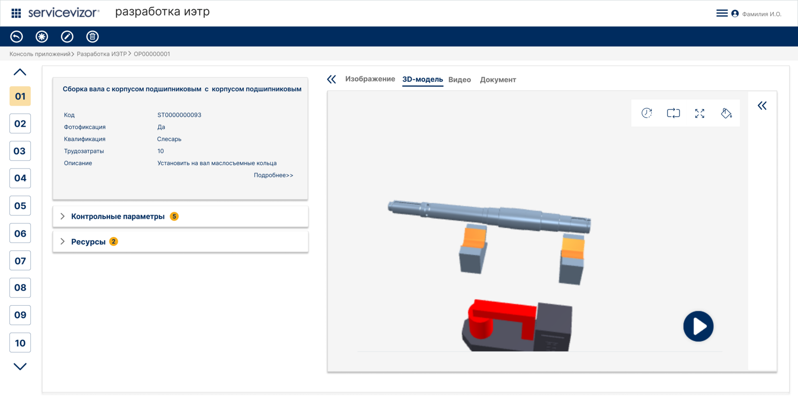
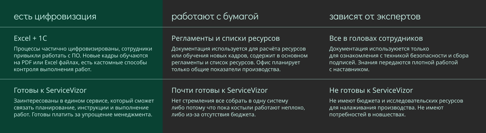
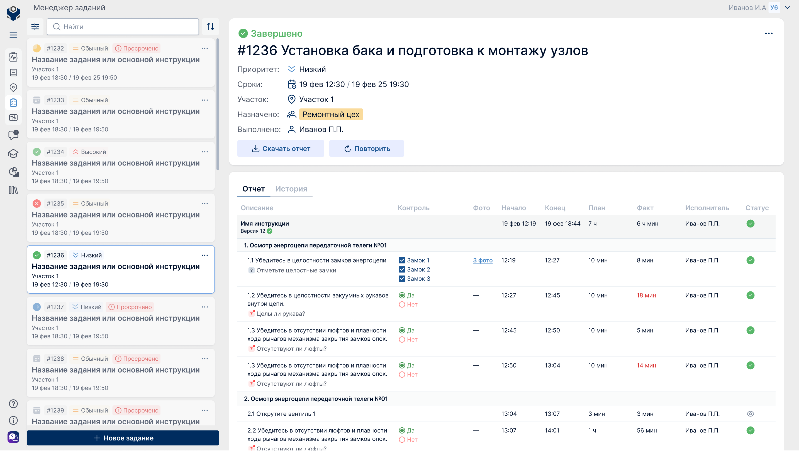
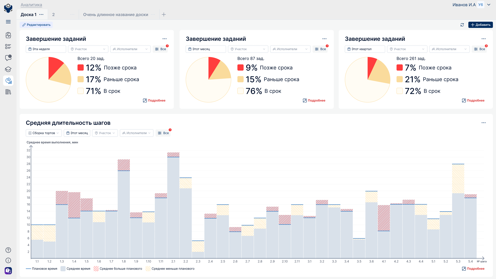
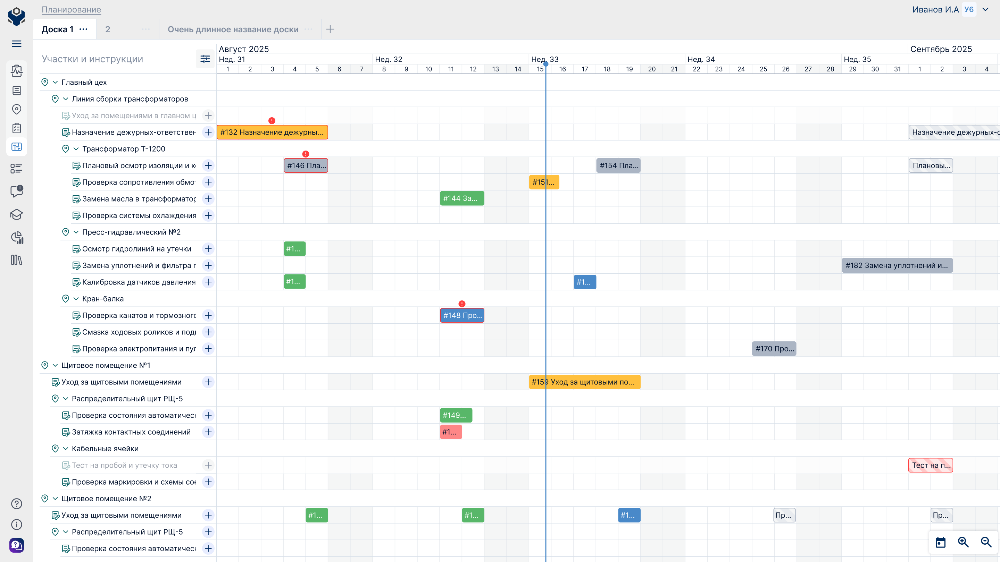

ServiceVizor: перезапуск продукта и смена стратегии
Как переход к масштабируемой системе рабочих инструкций привёл к первым долгосрочным контрактам.
О проекте

о продукте
ServiceVizor связывает офисное планирование с выполнением задач на производстве.
В веб-сервисе технические специалисты создают рабочие инструкции, назначают задания и контролируют ход работ. В приложении операторы выполняют задания, отвечают на контрольные вопросы и фиксируют замечания в процессе работы.
моя роль
Я пришла в продукт, когда первая версия требовала полной пересборки. В течение двух лет была единственным дизайнером и участвовала в ключевых продуктовых решениях.
Участвовала в интервью, анализе конкурентов и выборе целевой аудитории; проектировала сценарии инструкций и заданий, обновила визуальную айдентику и помогла подготовить руководство для клиентов с демо-доступом.
контекст
Первая версия делала акцент на 3D и AR: производственные операции сопровождались детальной визуализацией. На несколько моделей уходили месяцы, а для покрытия процессов требовались сотни. Контракт с первым заказчиком не продлили.



исследование и новый фокус
Перед редизайном нам нужно было понять, какие задачи клиенты хотят решать, за что готовы платить и что мешает внедрению системы.
формат исследования
Выборка на старте была ограниченной: первый заказчик, отказавшийся от продления, и несколько производств, заинтересованных на этапе консультаций. Интервью проходили вместе с демонстрацией продукта. Я участвовала в их проведении и анализе, изучала конкурентные решения и обратную связь демо-пользователей.
Покупку согласовывают менеджеры, а каждый день с системой работают операторы. Доступ к конечным пользователям появился после первого нового лояльного заказчика — это ограничение мы учитывали при выводах.
аудитория
Производства различались по зрелости процессов и использованию цифровых инструментов. Наиболее готовыми к внедрению оказались компании, у которых уже началась цифровизация.

ключевые выводы
Менеджерам важны планирование и контроль, исполнителям — простота и скорость. Вводить инструкции с нуля вручную пользователям тяжело. Опытным работникам цеха подробные 3D-модели не нужны для повторяющихся операций, а их производство не масштабируется на сотни процессов.
Новой версии нужны универсальная логика, быстрое внедрение и предсказуемый интерфейс.
решения в MVP
Два раздела связывают базу знаний с реальной работой на производстве.
рабочие инструкции
Мы создали инструмент, в котором пользователь может преобразовать прежние инструкции с помощью ИИ, чтобы ускорить внедрение. Готовый результат можно отредактировать: изменить текст, добавить фото, документы и видео.


менеджер заданий
Руководители назначают задания на выполнение подготовленных инструкций. Основной экран показывает ключевую информацию о задаче и отчёт о выполнении с учётом её статуса.

планшет исполнителя
Пересобрали основной экран выполнения шага рабочей инструкции на планшете.


дальнейшее развитие
После MVP появились диаграмма Ганта и аналитика для планирования. Этой части продукта посвящён отдельный кейс ↗.


результат
После перезапуска продукт начали использовать в реальных производственных процессах. Путь клиента: презентация и консультация, демо-доступ на 1–3 месяца, затем лицензионный договор.
клиента
подписали долгосрочные лицензионные контракты ещё во время активной разработки.
производства
использовали продукт в демо-режиме для проверки сценариев внедрения.
потенциальных клиента
находились на этапе согласования долгосрочных контрактов.